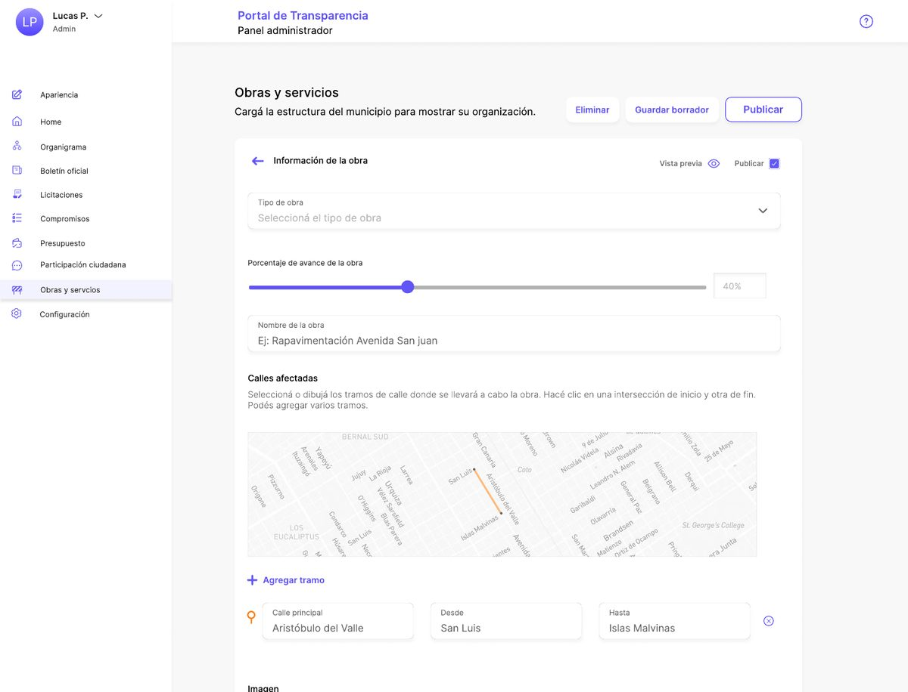

{{t.v1Title}}
{{t.v1Text}}
{{t.heroTag}}
{{t.heroSub}}
{{t.heroLead}}
{{heroCap}}
{{t.pEyebrow}}
{{t.pText}}
{{t.bEyebrow}}
{{t.bText}}
{{t.bBadT}}
{{f.text}}
{{f.where}}
{{t.bGoodT}}
{{f.text}}
{{f.where}}
{{t.uEyebrow}}
{{t.uText}}
“{{p.quote}}”
{{t.needs}}: {{p.need}}
{{t.uNote}}
{{t.aEyebrow}}
{{t.aText}}
{{t.anText}}
{{t.eEyebrow}}
{{t.eText}}
{{mod.decision}}
{{t.kEyebrow}}
{{t.kText}}
“{{h.pain}}”
{{h.answer}}
{{t.mText}}
{{t.mModules}}
{{t.mColor}}
{{t.oText2}}

{{t.dEyebrow}}
{{t.dText}}
{{t.iEyebrow}}
{{t.iText}}
{{t.iBadge}}{{t.oEyebrow}}
{{t.oText}}
{{l.eyebrow}}
{{l.text}}
{{g.label}}